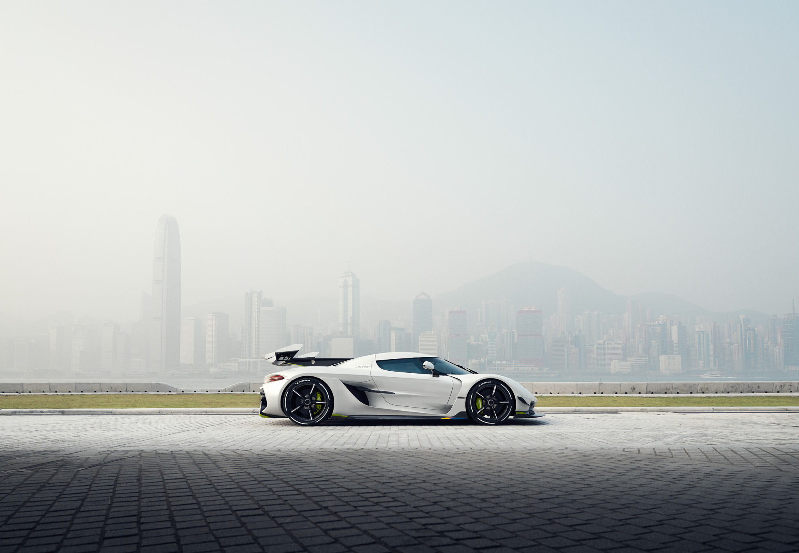
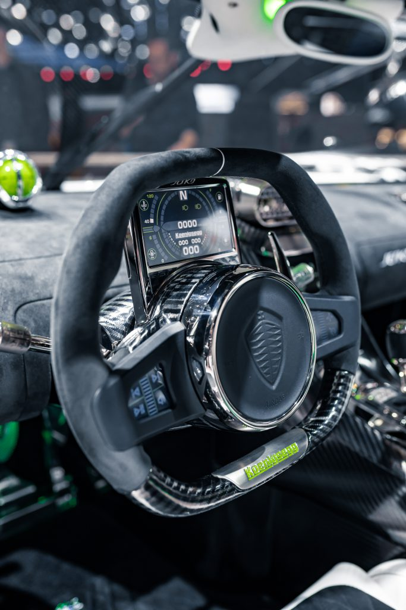

Koenigsegg Jesko
科尼赛克公布了全新的megacar -科尼赛克Jesko -在2019年日内瓦国际车展。Jesko继承了Agera RS作为领先的轨道聚焦，道路合法的汽车，为那些寻找最终的车辆性能的衣冠。
·重新设计5.0升双涡轮V8发动机，使用标准汽油可产生1280马力，使用E85生物燃料可产生1600马力(部分市场)
·革命性的新型9速科尼赛克光速传输(LST)
·先进的空气动力学提供超过1000kg的下压力
·主动后轮转向
·重新设计的碳纤维底盘有更多的伸腿空间，净空间和更大的能见度
·Jesko是以公司创始人兼首席执行官Christian von Koenigsegg的父亲Jesko von Koenigsegg的名字命名的。
·在科尼赛克汽车形成的岁月，Jesko von Koenigsegg是一个关键的存在。他相当敏锐的商业头脑帮助公司度过了许多早期的挑战。现已退休的80多岁的杰斯科·冯·科尼赛克和他的妻子布里塔在2019年日内瓦车展上见证了他的同名汽车向世界推出。
